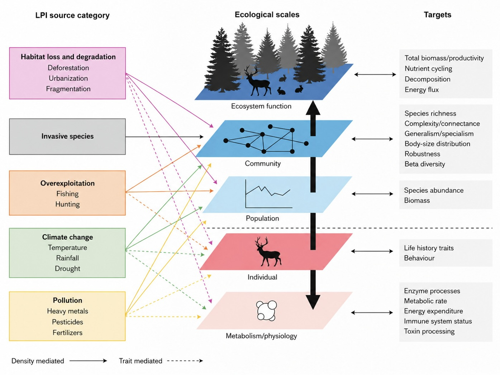
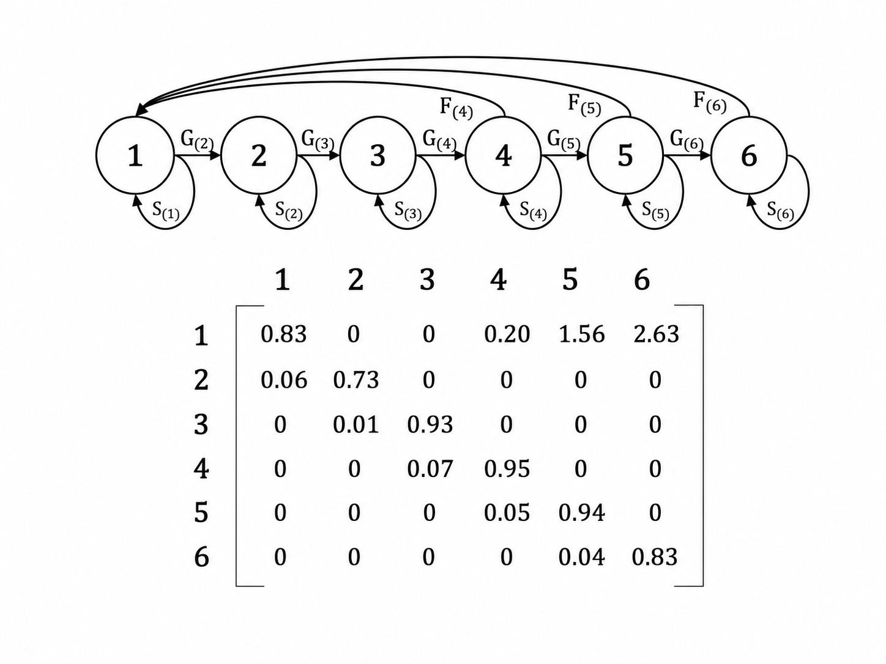
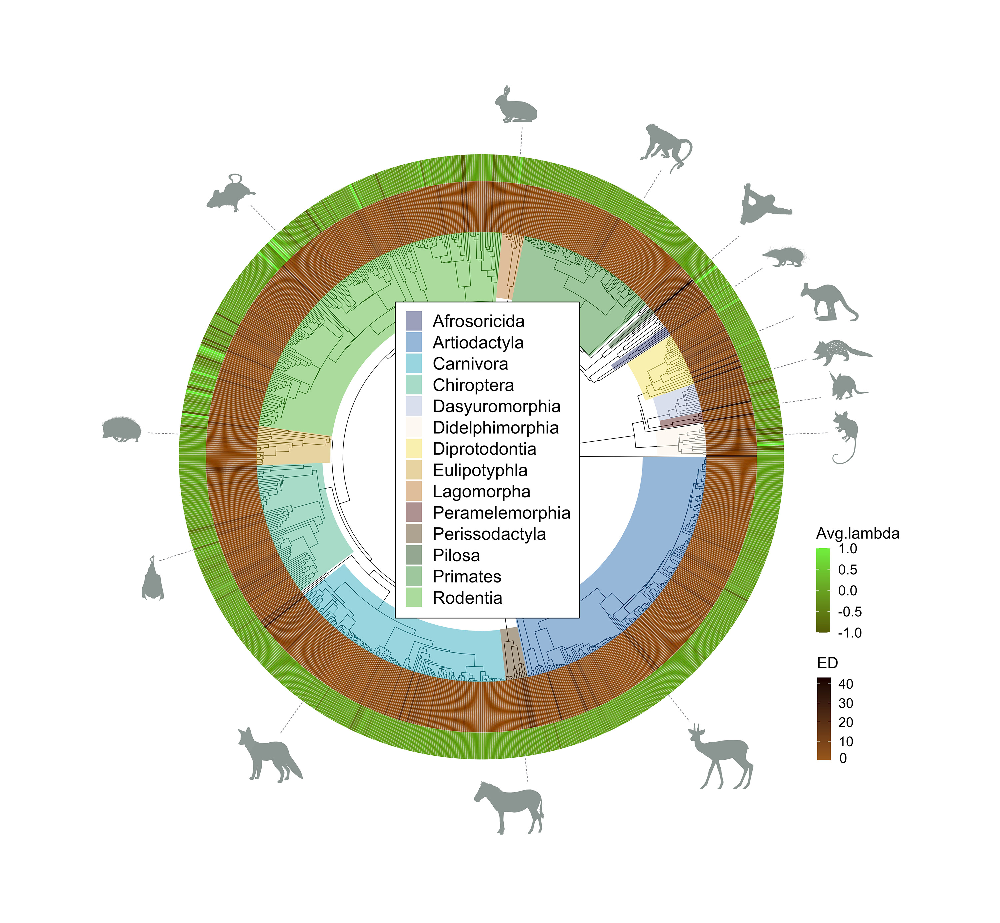
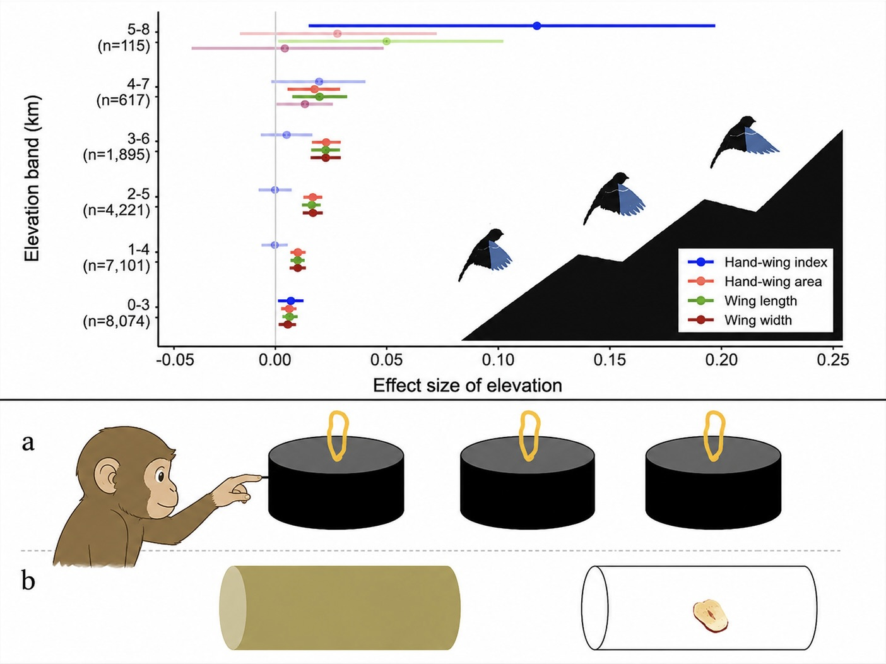

Research
My research spans multiple scales of biological organisation — from individual traits to community dynamics. Click a topic to learn more.

Integrating resilience from the individual level to the community level — my core doctoral theme.

Demographic modelling and matrix population models to understand how populations persist and respond to disturbance.

Exploring how phylogenetic diversity and population trends intersect to inform conservation priorities across the tree of life.

A collection of past projects and topics I may return to — from animal cognition to community ecology and the macroevolution of species traits.
My doctoral research centres on a deceptively simple question: what makes ecological systems resilient, and does the answer change depending on the scale at which we look? I am interested in how resilience — the capacity of a system to absorb disturbance and reorganise — manifests differently at the level of individual organisms, populations, and communities.
Rather than treating these scales in isolation, I am working towards a framework that explicitly bridges them. The goal is to understand how individual-level trait responses aggregate into population dynamics, and how those dynamics feed back into community structure and resilience. This cross-scale perspective is central to my DPhil at the University of Oxford.
Current work combines meta-analysis, comparative methods, and large-scale open datasets. I aim to extend these to empirical field data and long-term monitoring datasets in the coming years.
Recommended Reading
Demography is the language in which populations tell their stories. Survival, growth, reproduction — these vital rates, structured by age or stage, determine whether a population grows, shrinks, or persists in the face of environmental change.
I work with matrix population models (MPMs) and integral projection models (IPMs) to characterise population dynamics across species and contexts. A particular focus is on transient dynamics — the short-term behaviours that unfold before a population reaches its asymptotic state — and how life-history traits predict the magnitude of these transients.
I am also a contributor to the COMPADRE and COMADRE Plant and Animal Matrix Databases, which compile MPMs from the published literature to enable comparative demographic analyses at a global scale.
Recommended Reading
Conservation biology has long grappled with the question of how to prioritise species for protection. Evolutionary distinctiveness — the amount of unique evolutionary history a species represents — has emerged as a compelling criterion, yet most priority frameworks treat it in isolation from how populations are actually faring in the wild.
In this line of work, I explored whether species' population trends are predictable from their position in the tree of life, and what happens when we integrate phylogenetic information with empirical abundance trends. The findings suggest that evolutionary history and recent population change provide largely complementary information — meaning frameworks that account for both can identify conservation priorities that neither metric alone would reveal.
This work has broader implications for how we design biodiversity monitoring programmes and interpret the signals they produce across the phylogenetic tree.
Recommended Reading
My research path has been deliberately broad. Before settling into macroecology and demography, I worked on projects spanning animal cognition, behavioural ecology, plant population genetics, and the effects of artificial light at night on decomposer communities.
These experiences were formative — they taught me to move comfortably across taxa, methodological traditions, and scales of enquiry. Some of these threads remain live interests: I am particularly drawn to the macroevolution of species traits, especially how functional traits evolve across phylogenies and what that tells us about the ecological roles species occupy today.
This section serves as a record of paths taken and a placeholder for directions not yet pursued.
Recommended Reading